Kế thừa truyền thống yêu nước, nhân nghĩa, đoàn kết của dân tộc.
Hồ Chí Minh coi truyền thống yêu nước, nhân ái và tinh thần cố kết cộng đồng của dân tộc là cơ sở quan trọng để tập hợp nhân dân thành một khối đoàn kết rộng lớn.
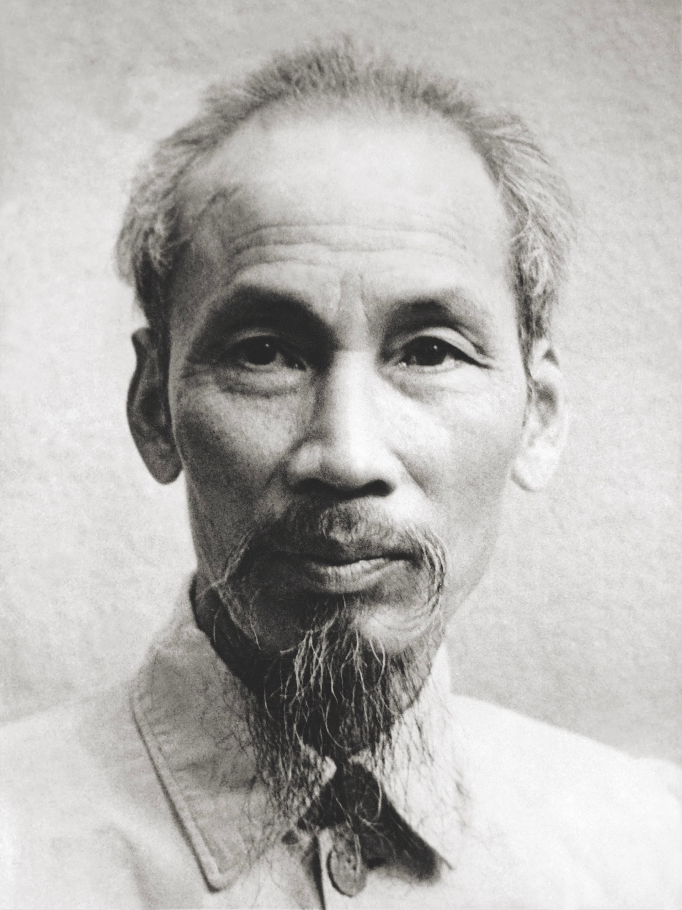
Không phải là thủ đoạn hay sách lược tạm thời.
Là chính sách xuyên suốt mọi giai đoạn cách mạng.
“Sử dạy cho ta bài học này: Lúc nào dân ta đoàn kết muôn người như một thì nước ta độc lập, tự do. Trái lại lúc nào dân ta không đoàn kết thì bị nước ngoài xâm lấn.”
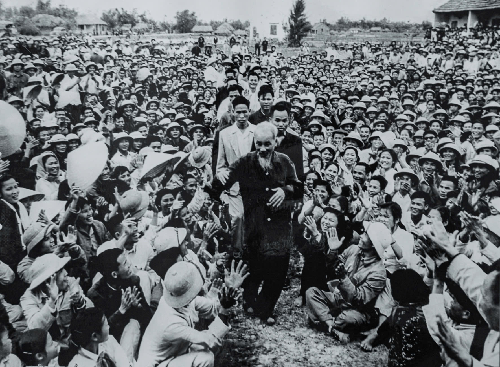
Quán triệt trong mọi đường lối, chủ trương, chính sách và hoạt động thực tiễn.
Cách mạng là sự nghiệp của quần chúng, do quần chúng và vì quần chúng.
Đoàn kết là con đường duy nhất để nhân dân tự giải phóng mình, giành độc lập và hạnh phúc.
Chủ thể của khối đại đoàn kết toàn dân tộc là toàn thể nhân dân, bao gồm:
Tất cả những người Việt Nam yêu nước ở mọi giai cấp, tầng lớp xã hội.
Các ngành, các giới, các lứa tuổi, các dân tộc.
Đồng bào các tôn giáo.
Các đảng phái...
“Ai có tài, có đức, có sức, có lòng phụng sự Tổ quốc và phục vụ nhân dân thì ta đoàn kết với họ.”
Tức là “ta” ở đây vừa là Đảng Cộng sản Việt Nam, vừa là mỗi người dân Việt Nam nói chung.
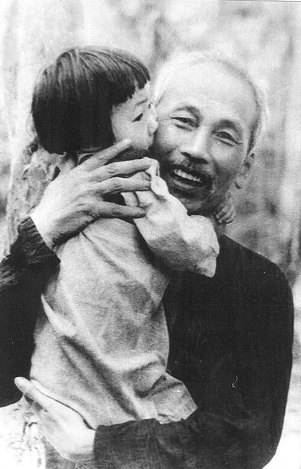
Theo Hồ Chí Minh, muốn xây dựng khối đại đoàn kết toàn dân tộc phải xác định rõ lực lượng làm nền tảng.
Người chỉ rõ đại ý:
Đại đoàn kết trước hết phải đoàn kết đại đa số nhân dân, mà đại đa số nhân dân là công nhân, nông dân và các tầng lớp nhân dân lao động khác.
Người ví lực lượng này như “nền của nhà, gốc của cây”.
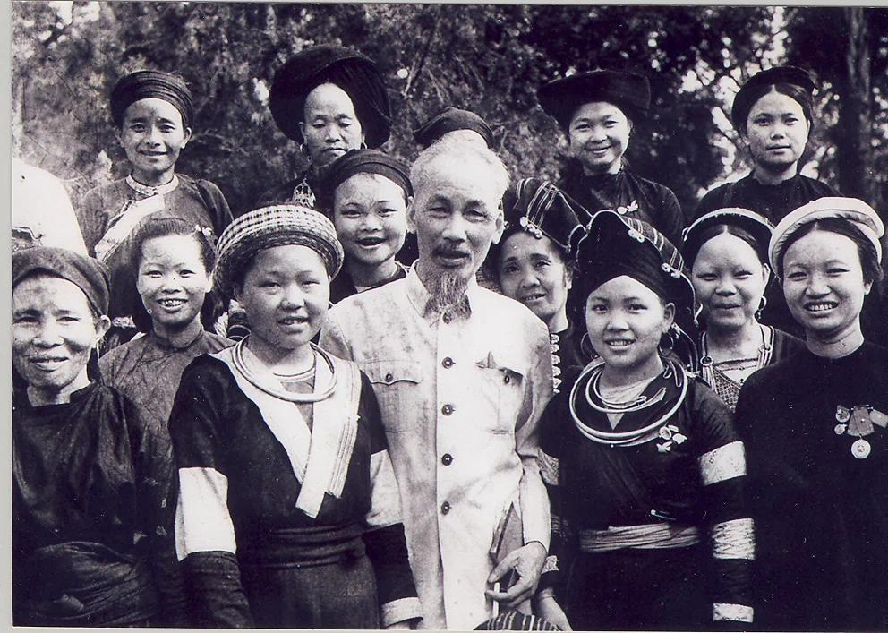
Ngoài ra, trong khối đại đoàn kết toàn dân tộc cần đặc biệt chú trọng “hạt nhân” là sự đoàn kết và thống nhất trong Đảng. Sự đoàn kết trong Đảng càng vững chắc thì sự đoàn kết trong toàn dân càng được tăng cường.
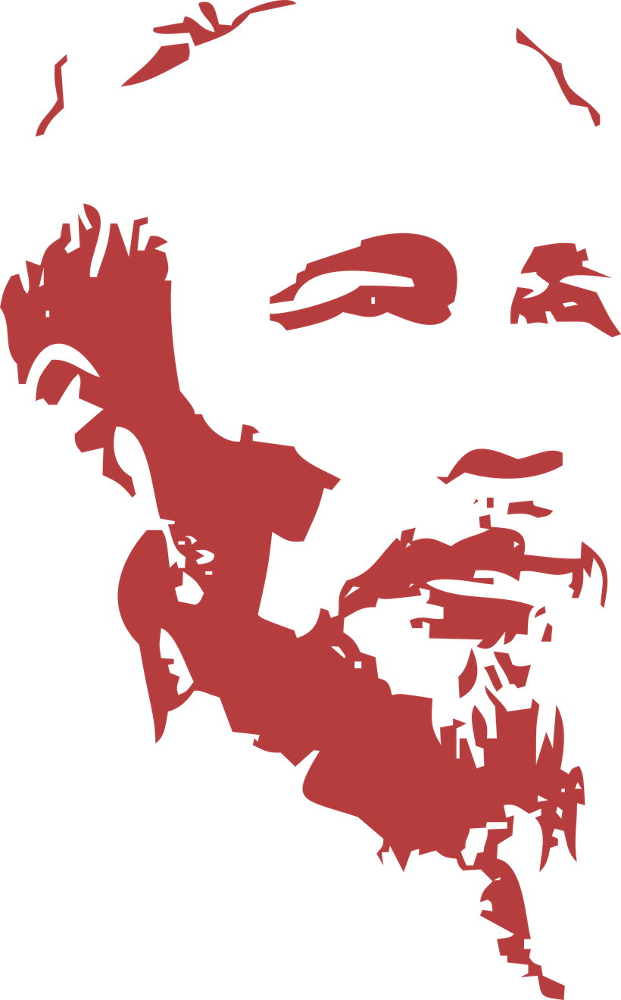
Hồ Chí Minh coi truyền thống yêu nước, nhân ái và tinh thần cố kết cộng đồng của dân tộc là cơ sở quan trọng để tập hợp nhân dân thành một khối đoàn kết rộng lớn.
Cần tôn trọng những điểm khác biệt, xóa bỏ định kiến, thành kiến, đối với những người trước đây từng có sai lầm nhưng nay thực sự hướng tới lợi ích chung của dân tộc thì vẫn có thể đoàn kết, tập hợp họ. Giáo trình nhấn mạnh tư tưởng đoàn kết rộng rãi và chân thành của Hồ Chí Minh.
Phải yêu dân, tin dân, dựa vào dân và phấn đấu vì hạnh phúc của nhân dân. Theo Hồ Chí Minh, nhân dân là nền tảng, là nguồn sức mạnh của khối đại đoàn kết và là lực lượng quyết định thắng lợi của cách mạng.
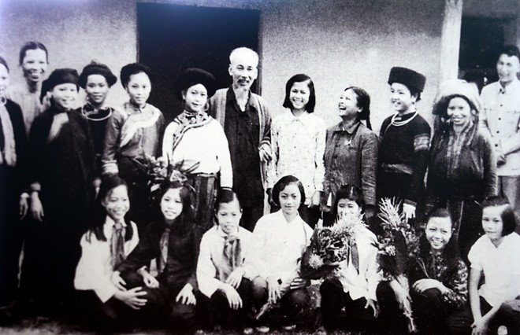
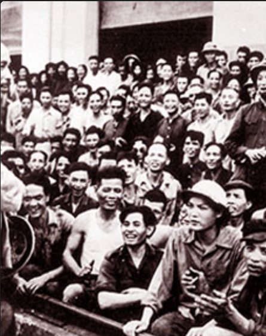
Mặt trận dân tộc thống nhất là nơi quy tụ mọi tổ chức và cá nhân yêu nước, tập hợp mọi người dân nước Việt, cả ở trong nước và kiều bào sinh sống ở nước ngoài.
Thông qua các tổ chức quần chúng phù hợp (Công hội, Nông hội, Đoàn Thanh niên, Hội Phụ nữ, Đội Thiếu niên, các hội nghề nghiệp, tôn giáo...), trong đó bao trùm nhất là Mặt trận dân tộc thống nhất.
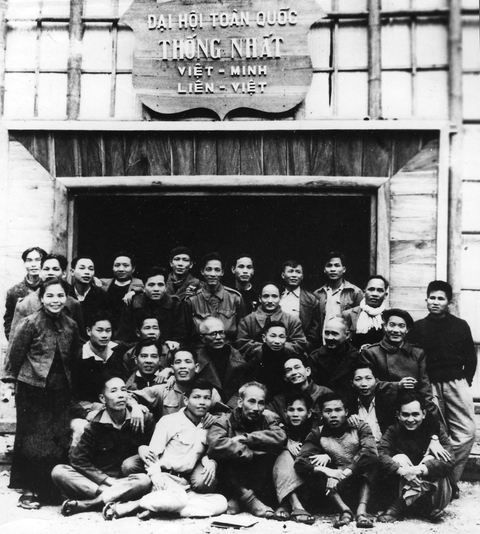
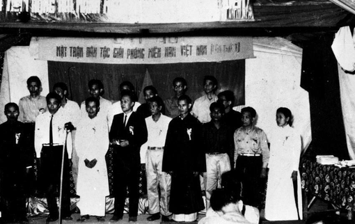
Hồ Chí Minh khẳng định: “Lực lượng chủ yếu trong khối đoàn kết dân tộc là công nông, cho nên liên minh công nông là nền tảng của Mặt trận dân tộc thống nhất”.
Bên cạnh đó, cần thấy rõ vai trò và sự cần thiết phải mở rộng liên minh với các giai cấp khác, đặc biệt là với đội ngũ trí thức.
Lý do phải lấy liên minh công nông làm nền tảng vì: “vì họ là người trực tiếp sản xuất tất cả mọi tài phú làm cho xã hội sống. Vì họ đông hơn hết, mà cũng bị áp bức bóc lột nặng nề hơn hết. Vì chí khí cách mạng của họ chắc chắn, bền bỉ hơn của mọi tầng lớp khác”.
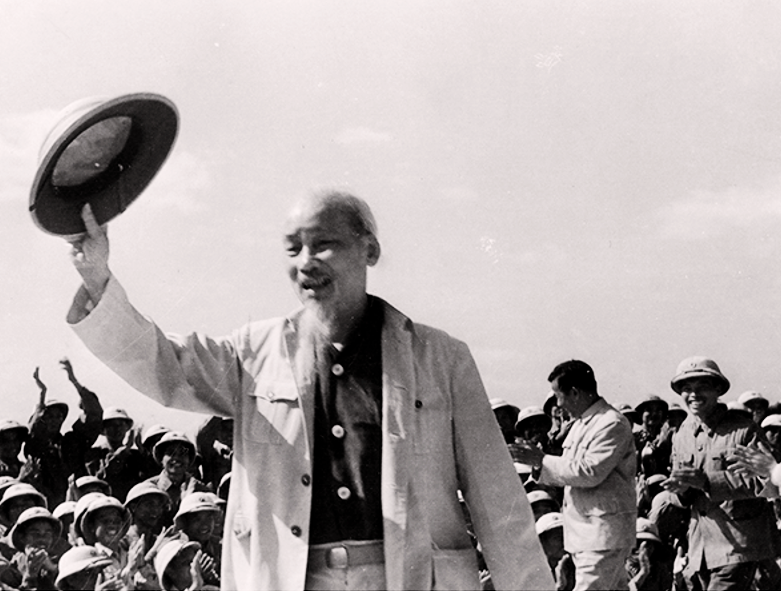
Vị trí của Đảng: Vừa là thành viên, vừa là lực lượng lãnh đạo Mặt trận.
Bản chất: Đảng không có lợi ích riêng mà luôn gắn liền với lợi ích của toàn xã hội và toàn dân tộc.
Phương thức lãnh đạo:
Nắm bắt thực tiễn, phát hiện quy luật khách quan để vạch ra đường lối và phương pháp cách mạng phù hợp.
Lãnh đạo Mặt trận hoàn thành sứ mệnh đấu tranh giải phóng dân tộc, giải phóng giai cấp, gắn kết độc lập dân tộc với chủ nghĩa xã hội.
Áp dụng phương châm “cầu đồng tồn dị”, lấy cái chung để hạn chế cái riêng và điểm khác biệt.
Hồ Chí Minh nêu rõ: “Đoàn kết thực sự nghĩa là mục đích phải nhất trí và lập trường cũng phải nhất trí. Đoàn kết thực sự nghĩa là vừa đoàn kết, vừa đấu tranh, học những cái tốt của nhau, phê bình những cái sai của nhau và phê bình trên lập trường thân ái, vì nước, vì dân”.
Điều này giúp tạo nên sự đoàn kết gắn bó chặt chẽ, lâu dài và là tiền đề để mở rộng khối đại đoàn kết trong Mặt trận.
Làm tốt công tác vận động quần chúng.
Thành lập đoàn thể phù hợp từng đối tượng.
Tập hợp trong Mặt trận dân tộc thống nhất.
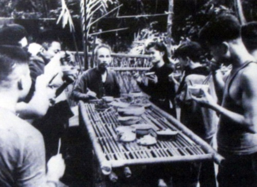
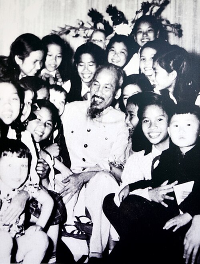
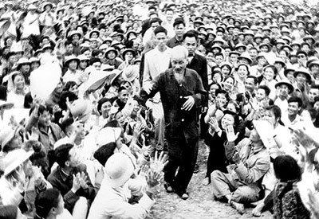
Sức Mạnh Đại Đoàn Kết Toàn Dân Tộc